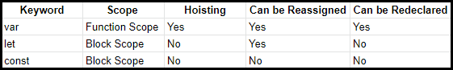

JavaScript variables are containers for storing data values. Conceptually, they’re one of the most fundamental concepts to learn. You’ve likely heard of the three ways in which variables can be declared: var, let & const. In this article, we’ll be taking a look at how we declare our variables & how we name them. We’ll take a look at how variables behave in our code, with hoisting and scope (local & global).
This article is part of a series I’m writing on learning the JavaScript fundamentals. Be sure to follow me if you’d like to keep track!
What are Variables?
Variables are named containers for storing data values. Any piece of information that we wish to reference multiple times can be stored in a variable for later use. In JavaScript, the value contained inside of a variable can be of any data type, including a number, string, or object.
Before the release of ES6, there was only one way to declare a variable — using the var keyword. You’ll still see var used quite often when working with older code. We’ll be looking at the newer conventions later in the article, but for now lets look at an example using var:
// Assign a string of “John Doe” to the “name” identifier
var name = “John Doe”;
Here we’ve declared our variable using var, our identifier is name, we’ve then assigned the variable using =, to the value of “John Doe”.
Now we can use name in our code. JavaScript will remember that name represents the string value John Doe.
// Check if variable is equal to a value
if (name === “John Doe”) { console.log(true); }
// output: true
As mentioned previously, variables can be used to represent any JavaScript data type. In this example, we’ll declare variables with string, number, object, Boolean, and null values.
// Assignment of various variables
var name = “John”; var total = 100; var city = [ “sydney”, “tokyo”, “montreal” ]; var things = { food: “pizza”, drink: “wine” }; var success = true; var nothing = null;
We can use console.log to see the value contained in a specific variable.
// Send total variable to the console
console.log(total);
// output: 100
Variables store data in memory which can later be accessed and modified. Variables can also be reassigned and given a new value. The following example demonstrates how a password might be stored to a variable and then updated.
// Assign value to password variable
var password = “qwerty1”;
// Reassign variable value with a new value
password = “qwerty2”;
console.log(password);
// output: qwerty2
Of course, a password would likely be securely stored in a database. However, this example illustrates a situation in which we might need to update the value of a variable. The value of password was qwerty1, but we reassigned it to qwerty2 which is the value JavaScript recognizes from that point on.
Naming Variables
In JavaScript, variable names are known as identifiers. Let’s take a look at some of the rules to follow when naming our variables:
Variable names can consist only of letters (a-z), numbers (0–9), dollar sign symbols ($), and underscores (_)
Variable names cannot contain any whitespace characters (tabs or spaces)
Numbers cannot begin the name of any variable
There are several reserved keywords which cannot be used as the name of a variable
Variable names are case sensitive
JavaScript also has the convention of using camel case (sometimes stylized as camelCase) in the names of functions and variables declared with var or let. This is the practice of writing the first word lowercase, and then capitalizing the first letter of every subsequent word with no spaces between them. Most variables that are not constants will follow this convention, with some exceptions. The names of variables that are constant, declared with the const keyword, are typically written in all uppercase.
This may seem like a lot of rules to learn, but it will very quickly become second nature to write valid and conventional variable names.
Difference Between var, let, and const
JavaScript has three different keywords to declare a variable, which adds an extra layer of intricacy to the language. The differences between the three are based on scope, hoisting, and reassignment.

So which method is best? A commonly accepted practice is to use const as much as possible, and let in the case of loops and reassignment. Generally, var can be avoided outside of working on legacy code.
Variable Scope
Scope in JavaScript refers to the current context of code, which determines the accessibility of variables to JavaScript. The two types of scope are local and global:
Global variables are those declared outside of a block
Local variables are those declared inside of a block
In the example below, let’s create a global variable.
// Initialize a global variable
var action= “run”;
We learned that variables can be reassigned. Using local scope, we can actually create new variables with the same name as a variable in an outer scope without changing or reassigning the original value.
In the example below, we will create a global “action” variable. Within the function is a local variable with the same name. By sending them to the console, we can see how the variable’s value is different depending on the scope, and the original value is not changed.
// Initialize a global variable
var action = “walk”;
function hurry() { // Initialize a local, function-scoped variable var action = “run”; console.log(action); }
In this example, the local variable is function-scoped. Variables declared with the var keyword are always function-scoped, meaning they recognize functions as having a separate scope. This locally-scoped variable is therefore not accessible from the global scope.
The new keywords let and const, however, are block-scoped. This means that a new, local scope is created from any kind of block, including function blocks, if statements, and for and while loops.
To illustrate the difference between function- and block-scoped variables, we will assign a new variable in an if block using let.
var race = true;
// Initialize a global variable
let action = “walk”;
if (race) { // Initialize a block-scoped variable let action = “run”; console.log(`It's a race! Let's ${action}.`); }
console.log(`It's not a race. Let's ${action}.`);
// output:
It's a race! Let's run. It's not a race. Let's walk.
In this example, the action variable has one value globally (walk), and another value locally (run). If we were to use var, however, there would be a different result.
// Use var to initialize a variable
var action = “walk”;
if (race) { // Attempt to create a new variable in a block var action = “run”; console.log(`It's a race! Let's ${action}.`); }
console.log(`It's not a race. Let's ${action}.`);
// output:
It's a race! Let's run. It's not a race. Let's run.
In the result of this example, both the global variable and the block-scoped variable end up with the same value, run. This is because instead of creating a new local variable with var, you are reassigning the same variable in the same scope. var does not recognize if to be part of a different, new scope. It is generally recommended that you declare variables that are block-scoped, as they produce code that is less likely to unintentionally override variable values.
Hoisting
In most of the examples so far, we’ve used var to declare a variable, and we have initialized it with a value. After declaring and initializing, we can access or reassign the variable.
If we attempt to use a variable before it has been declared and initialized, it will return undefined.
// Attempt to use a variable before declaring it
console.log(x);
// Variable assignment
var x = 100;
// output:
undefined
However, if we omit the var keyword, we are no longer declaring the variable, only initializing it. It will return a ReferenceError and halt the execution of the script.
// Attempt to use a variable before declaring it
console.log(x);
// Variable assignment without var
x = 100;
// output:
ReferenceError: x is not defined
The reason for this is due to hoisting, a behavior of JavaScript in which variable and function declarations are moved to the top of their scope. Since only the actual declaration is hoisted, not the initialization, the value in the first example returns undefined.
To demonstrate this concept more clearly, below is the code we wrote and how JavaScript actually interpreted it.
// The code we wrote
console.log(x);
var x = 100;
// How JavaScript interpreted it
var x;
console.log(x);
x = 100;
JavaScript saved x to memory as a variable before the execution of the script. Since it was still called before it was defined, the result is undefined and not “100". However, it does not cause a ReferenceError and halt the script.
Although the var keyword did not actually change location of the var, this is a helpful representation of how hoisting works. This behavior can cause issues, though, because the programmer who wrote this code likely expects the output of x to be true, when it is instead undefined.
We can also see how hoisting can lead to unpredictable results in the next example:
// Initialize x in the global scope
var x = 100;
function hoist() { // A condition that should not affect the outcome of the code if (false) { var x = 200; } console.log(x); }
hoist();
// output:
undefined
In this example, we declared x to be 100 globally. Depending on an if statement, x could change to 200, but since the condition was false it should not have affected the value of x. Instead, x was hoisted to the top of the hoist() function, and the value became undefined.
This type of unpredictable behavior can potentially cause bugs in a program. Since let and const are block-scoped, they will not hoist in this manner, as seen below.
// Initialize x in the global scope
let x = true;
function hoist() { // Initialize x in the function scope if (3 === 4) { let x = false; } console.log(x); }
hoist();
// output:
true
Duplicate declaration of variables, which is possible with var, will throw an error with let and const.
// Attempt to overwrite a variable declared with var
var x = 1; var x = 2; console.log(x);
// output:
2
// Attempt to overwrite a variable declared with let
let y = 1; let y = 2; console.log(y);
// output:
Uncaught SyntaxError: Identifier ‘y’ has already been declared
To summarize, variables introduced with var have the potential of being affected by hoisting, a mechanism in JavaScript in which variable declarations are saved to memory. This may result in undefined variables in one’s code. The introduction of let and const resolves this issue by throwing an error when attempting to use a variable before declaring it or attempting to declare a variable more than once.
Constants
Many programming languages feature constants, which are values that cannot be modified or changed. In JavaScript, the const identifier is modeled after constants, and the values assigned to a const cannot be reassigned.
It is common convention to write all const identifiers in uppercase. This marks them as readily distinguishable from other variable values.
In the example below, we initialize the variable ACTION as a constant with the const keyword. Trying to reassign the variable will result in an error.
// Assign value to const
const ACTION = “walk”;
// Attempt to reassign value
ACTION = “run”;
console.log(ACTION);
// cutput:
Uncaught TypeError: Assignment to constant variable.
Since const values cannot be reassigned, they need to be declared and initialized at the same time, or will also throw an error.
// Declare but do not initialize a const
const RACING;
console.log(RACING);
// output:
Uncaught SyntaxError: Missing initializer in const declaration
Values that cannot change in programming are known as immutable, while values that can be changed are mutable. Although const values cannot be reassigned, they are mutable as it is possible to modify the properties of objects declared with const.
// Create a PERSON object with two properties
const PERSON = { name: “Joanna”, balance: 10000 }
// Modify a property of PERSON
PERSON.balance = 15000; console.log(PERSON);
// output:
{ name: ‘Joanna’, price: 15000 }
Constants are useful for making it clear to your future self and other programmers working on a project with you that the intended variable should not be reassigned. If you expect that a variable may be modified in the future, you will likely want to use let to declare the variable instead.
Conclusion
And that’s it! We’ve taken a look at what a variable is, the rules of naming a variable, and how to reassign variable values. We also learned about scope and hoisting, some of the limitations of the original var keyword, as well as how let and const resolve those issues.